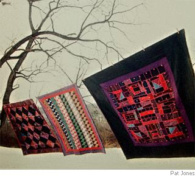

So many things by reason reason’d are
It wonders me. If hurrieder I go,
Behinder I end up! Ya, I grow far
Too soon old und too late schmart! I throw
The milking cows over the fence some hay
Then stare into their liquid eyes that kind
Of look like yours do on a summer’s day;
It’s raining, but it makes no nevermind.
I git some mortal longings when it’s time
For dinner, so I go inside to et
Some chow-chow und some rivel soup. Soon I’m
Asleep onct, though the shoofly pie is yet.
But all the world’s a farm und there are chores;
I reckon you’ll find meaning in my snores.

Patti McCarty grew up in Lancaster County, heart of the Pennsylvania Dutch country. She often wonders how different her life would be if her grandfather had not left the Amish and become English, although she’s fairly certain she would not be writing poetry if he hadn’t.
Jonas Stoltzfus grew up Amish until age eight, when his father became English. He is an early rising, hard-working farmer poet who recently published his first collection of poems, A Cup of Joe, in which he celebrates the cycles of life on the farm and shares his reflections on love, death, friendship, and grandfatherhood.